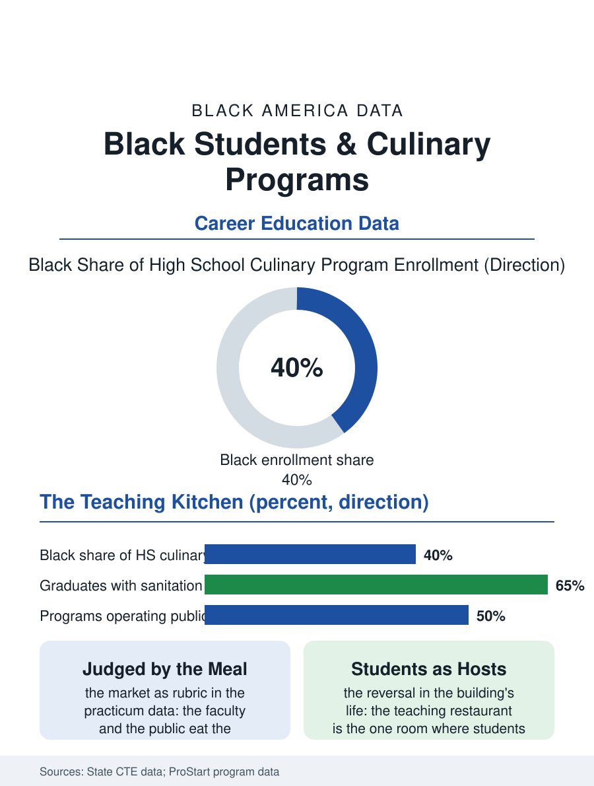

Black Education
The School's Table: Black Students and Culinary Arts
A working restaurant inside the school, judged by the meal, where the cook is sixteen and the hierarchy dissolves at lunch. The culinary file.

The culinary arts program is the school restaurant: a working kitchen and dining room inside the high school, staffed by students, feeding the faculty and the public, in the CTE file's most delicious practicum and one of its most Black in the urban districts, on the ladder the restaurant file's kitchen describes. This article reads the culinary program file.
The Teaching Restaurant
The model's structure is the industry's own compressed: the stations, the knife skills' progression, the sanitation certification that is the program's first credential and the industry's legal floor, the dining room's service as the front of the house's practicum, the whole under an instructor who is a working chef teaching against the restaurant wage in the trade instructor's pattern. The clientele is the program's jury, the faculty lunch and the community's banquet bookings filling the room the students serve, so that the feedback is the market's rather than the rubric's, a standard the students meet with the pride the qualitative accounts record as the program's atmosphere entire. The costs are the file's capital: the commercial kitchen's equipment and the food's weekly burn, funded by the dining room's receipts and the district's braid in the pattern of the other practica, with the industry's donations, the purveyor's and the hotel's surplus and mentorship, in the advisory pattern. The menu's heritage unit is the program's signature in the districts that built it, the students costing and executing the cuisine's canon under the elders' occasional guest instruction, the recipe's oral tradition meeting the standardized measure in the same lesson, an encounter the students' own accounts describe as the program's soul and the visiting chefs treat as its distinction in the hiring conversation. The food cost's arithmetic, the yield and the waste and the price point, is the program's mathematics in the construction file's pattern, the abstraction made edible, and the students who master it hold the restaurant file's scarcest junior skill.
Certifications and the Line's Door
The credential stack, the sanitation card, the national culinary certifications' student tiers, and the program's articulation into the culinary schools and the apprenticeships, constitutes the graduate's file, whose placement in the industry's kitchens follows the restaurant file's own ladder, the program's alumni entering at the prep and line positions a rung above the walk-in's in the chefs' own accounts where the program is known. The competition file, the student culinary contests judged by the industry's chefs, is the program's interscholastic season as the automotive contests are the garage's, its trophies the recruiting instrument and its judges the hiring file in person.
The School's Table
The culinary file closes on the program's place in the building's life, because the teaching restaurant is the school's one room where the students host the adults, a reversal of the institution's usual hospitality that the guests feel and the students carry as the program's dignity entire. The food heritage file is the curriculum's local form in the strong programs, the cuisine's traditions taught as technique and history in the pattern of the cosmetology lab's reversal, the student's home table entering as prior knowledge in the kitchen that will employ her. The association counts the programs in the hundreds of districts. The file's last entry is the Friday service's last seating, the dining room of teachers and grandmothers eating the week's examination at the students' hands, the instructor at the pass calling the tickets in the room where the school's hierarchy dissolves, for one lunch, into the restaurant's older one, in which the cook is king and the cook is sixteen. The knife's respect is the kitchen's first safety file and its first philosophy in one, the instructor's demonstration of the grip being the moment the room understands that this classroom's mistakes are paid in the body's currency, a seriousness the students carry, in the chefs' accounts, as the program's unmistakable graduate mark. The burn and the cut are the kitchen's tuition paid in advance, and the room's respect for both is the instructor's true subject under all the others. The room learns it at the first service and keeps it at every one after. The record is the work, and the work is standing by to be read.
More in Black Education
Black Educational Attainment: High School Parity, the College Gap
About 89 percent of Black adults hold a high school diploma and one in four holds a bachelor's degree or higher — the attainment ladder, the college completion gap, and the generational trend.
Historically Black Colleges and Universities: Enrollment and Degrees
More than 100 HBCUs enroll roughly 290,000 students and award about one in six Black bachelor's degrees — an outsized share from a small sector. The federal education data.
Black College Enrollment: 2.4 Million Students
About 2.4 million Black students are enrolled in American colleges — nearly two-thirds of them women. The NCES enrollment data by sector, level, and trend.
Source: State career and technical education data; National Restaurant Association Educational Foundation ProStart data.